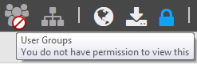

Purpose
The Access Control
Manager is a web based access and privilege control tool for
Flatirons
Suite software. It provides a common source for controlling organizations, users, user
groups and their access rights and permissions in other Flatirons software modules.
Supported Browsers
The application
supports the current version and the version prior to that for these browsers:
- Chrome
- Edge Chromium
- Firefox
- Safari
- Opera
Note: In
Chrome, Edge
Chromium, and
Firefox,
we have seen that cookies are not deleted after restart of the browser. The following
options can be used to fix the problem:
- For Chrome,
you can resolve
this
by
enabling this
setting:
"Clear
cookies and site data when you close all windows". This option
is
located under .
- For Edge Chromium, you can resolve this by enabling this setting: "Cookies and
other site data". This option is located under .
- For
Firefox,
you can resolve
this by enabling this setting: use
"Delete
cookies and site data when Firefox is closed".
This option is
located under .
Access Control
Manager
Permissions
Permissions are required to view and operate the
forms/resources
in the Access Control
Manager
application. These permissions are granted to user groups, not single users.
Icons/links that you do not have permission to access are greyed out and if you mouse over
these you will see a stop sign with a tool-tip text, like
this:

An overview of which permissions that are required to view
forms
and make changes is found in Permissions for Access Control Manager.